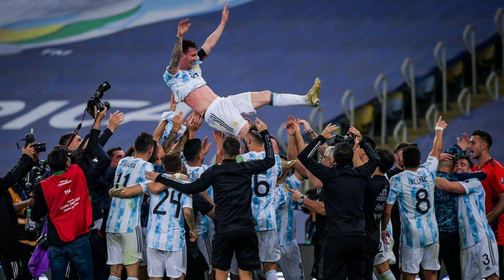
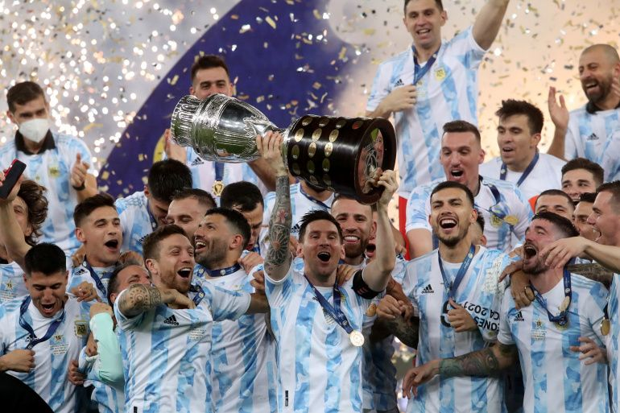
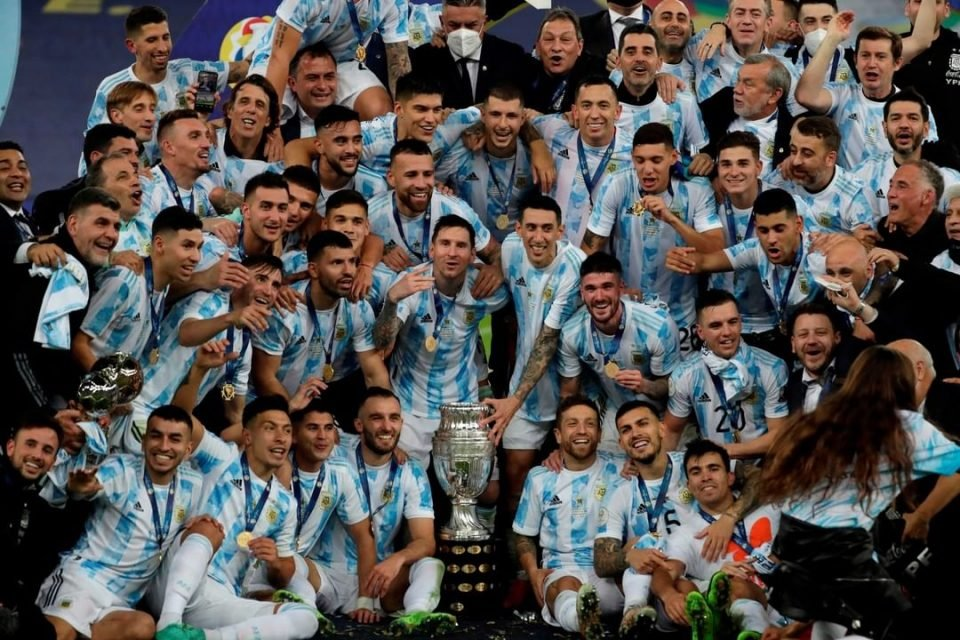

Neymar Jr
Neymar da Silva Santos Júnior, known as Neymar, is a Brazilian pro footballer. He is widely regarded as one of the best players in the world.

Lionel Messi
Lionel Andrés Messi is an Argentine professional footballer who plays as a forward and captains the Argentina national team.

Cristiano Ronaldo
Cristiano Ronaldo dos Santos Aveiro GOIH ComM is a Portuguese professional footballer who is the captains the Portugal national team.

Paulo Dybala
Paulo Exequiel Dybala is an Argentine professional footballer who plays as a forward for Serie A club Juventus and the Argentina national team.

Mesut Ozil
Mesut Özil is a German professional footballer who plays as an attacking midfielder for Süper Lig club Fenerbahçe.

Mauro Icardi
Mauro Emanuel Icardi is an Argentine pro footballer who plays as a striker for Ligue 1 club Paris Saint-Germain and the Argentina national team.

Di Maria
Ángel Fabián Di María is an Argentine professional footballer who plays for Ligue 1 club Paris Saint-Germain and the Argentina national team.

Kylian Mbappé
Kylian Mbappé Lottin is a French pro footballer who plays as a forward for Ligue 1 club Paris Saint-Germain and the France national team.

Mohamed Salah
Mohamed Salah Hamed Mahrous Ghaly is an Egyptian pro footballer who plays as a forward and the captains of the Egypt national team.

Harry Kane
Harry Edward Kane MBE is an English professional footballer who plays as the captains the England national team.

Kevin De Bruyne
Kevin De Bruyne is a Belgian professional footballer who plays as a midfielder for Premier League club Manchester City, where he is vice-captain.

Philippe Coutinho
Philippe Coutinho Correia is a Brazilian pro footballer who plays as an attacking midfielder or winger for Spanish club Barcelona and the Brazil national team.
Copa America Final-2021 Epic Moment


